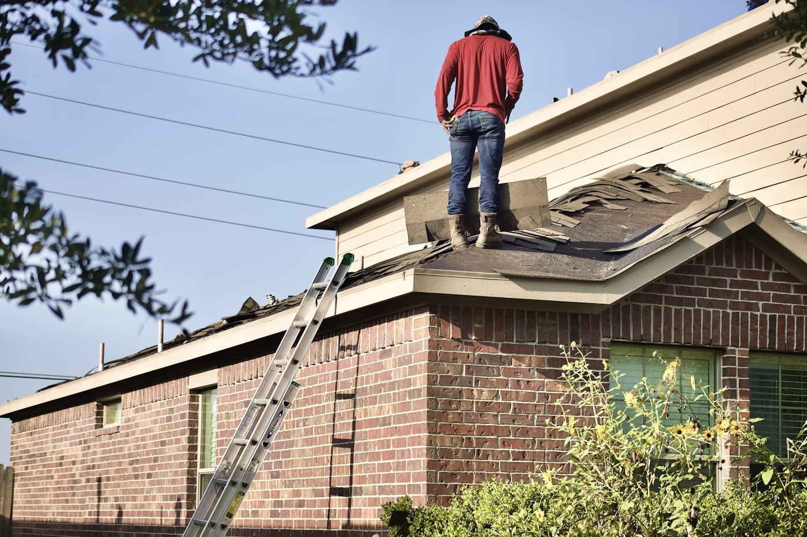
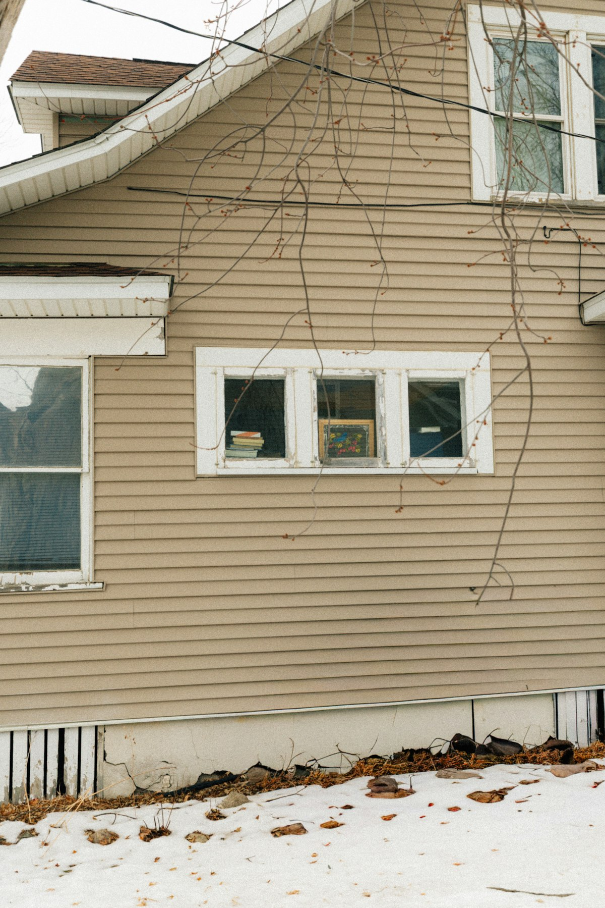

Everything that keeps water outside the house.
Most of our work is asphalt shingle replacement. The rest is the parts of the envelope that fail alongside it, done by the same crew on the same visit.
Roof replacement
A full tear-off down to the decking, every time. We do not lay a second layer over a failing first one to save a day of labor, because it hides the decking, voids most manufacturer warranties and makes the next roof more expensive than this one.
- Synthetic underlayment across the full deck, not felt paper
- Ice and water shield in every valley and along the eaves, which Iowa winters make non-negotiable
- New pipe boots, step flashing and drip edge, not the old ones reused
- Ridge vent sized to the attic, because a roof that cannot breathe cooks itself from underneath
One day for most metro houses. Two if the pitch is steep or there is a second layer to strip. We will not open a roof we cannot dry in before dark, so if the forecast turns we move the date rather than gamble with your ceiling.

Repairs, when a repair is the right answer.
A repair is often the honest recommendation, and it is the one that makes us the least money. We make it anyway, because the alternative is selling a roof to somebody who did not need one.
-
Leaks around penetrations
Vent stacks, chimneys, skylights and swamp coolers. The shingle field is almost never the problem. The thing sticking through it usually is.
-
Wind and limb damage
A strip of blown shingles or a branch through the decking. We match the existing shingle as closely as the manufacturer still makes it, and we tell you honestly how well it will blend.
-
Flashing and valleys
Where two roof planes meet, and where the roof meets a wall. Old step flashing that was caulked instead of replaced is the single most common thing we find.

Gutters and downspouts
Seamless aluminum, formed on site to the length of your run so there are no joints to come apart in the middle. Sized to the roof above them, which sounds obvious and is skipped constantly.
Close to half the roof leaks we get called out for are not roof leaks. They are gutters that stopped moving water, backing it up under the shingle edge until it finds the decking. It is worth fixing on its own, and it is much cheaper to do while the crew is already on the house for a roof.
Siding, soffit and fascia
Hail that takes a roof usually takes the north and west elevations of the siding with it, and an insurance claim that covers one often covers the other. We will document both while we are up there whether or not you ask us to.
Vinyl and fibre cement, plus the soffit and fascia behind the gutter line, which is where rot starts and where nobody looks until the paint fails.
Skylights and ventilation
We replace skylights during a re-roof rather than flashing around an old unit, because a twenty year old skylight under a brand new roof is a leak with a countdown on it. Attic ventilation gets balanced at the same time: intake at the soffit, exhaust at the ridge.

Materials and warranty
What we put on, and what stands behind it.
- Architectural shingle as standard
- Heavier and longer lived than the three-tab strip shingle that is still sold as a budget option. We quote three-tab only when a homeowner asks for it, and we will tell you what you are giving up.
- Impact-rated shingle where it earns its keep
- Class 4 impact rating costs more up front and several Iowa insurers discount the premium for it. Whether that maths works depends on your carrier, and we will run it with you rather than assume.
- A warranty that covers the work, not just the box
- Manufacturer coverage on the material, and ten years from us on the workmanship. Almost every roof failure in the first decade is an installation problem, so a material-only warranty covers the thing least likely to go wrong.
- The site goes back the way we found it
- Plywood over the beds and the AC unit, the dump trailer on plywood in the driveway, and a rolling magnet across the yard and the street twice before the crew leaves. Find a nail afterwards and somebody comes back to sweep again.
What it costs, as honestly as we can put it on a website.
Anyone quoting a firm price for your roof without having seen it is guessing, and a guess low enough to win the job has to be made up somewhere later.
-
What actually moves the number
Square footage and pitch first. Then the number of penetrations, valleys and dormers, whether there is a second layer to strip, how much decking has to be replaced, and how hard the house is to get a dump trailer next to.
-
How we handle it
The Roof Report gives you an itemized estimate, in writing, good for ninety days. If rotted decking turns up during the tear-off we photograph every sheet before replacing it, at the per-sheet price already written on your estimate.

Start with the free inspection.
Forty-five minutes, photographs of everything, and an itemized number. Then you have something to compare every other quote against.